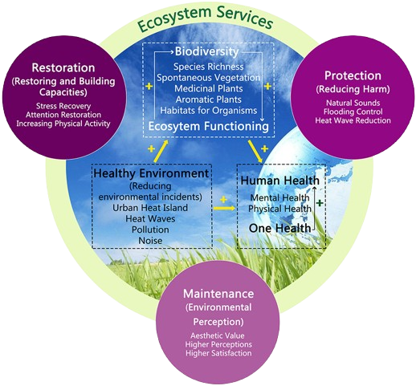

What is Our Ecosystem?
Our ecosystem is a diverse and complex network of living organisms and their physical environment. It includes the plants, animals, microorganisms, and humans that inhabit a particular region, as well as the air, water, soil, and other non-living components of the environment.
Why is Our Ecosystem Important?
Our ecosystem provides us with a wide range of essential services, such as clean air and water, fertile soil, and a stable climate. It also supports biodiversity, which is crucial for maintaining the health and resilience of our natural systems.
How Can We Help?
There are many ways that we can help protect and preserve our ecosystem. These include reducing our use of fossil fuels, supporting sustainable agriculture and forestry practices, reducing waste and pollution, and conserving biodiversity by protecting endangered species and their habitats.
Flora of Our Ecosystem
The flora of our ecosystem includes a wide variety of plant species, ranging from towering trees to delicate wildflowers. These plants play a crucial role in maintaining the health and balance of our ecosystem, providing food and habitat for wildlife, regulating the climate, and purifying the air and water.
Fauna of Our Ecosystem
The fauna of our ecosystem is equally diverse, with a wide range of animal species that inhabit the region. From majestic mammals to tiny insects, these animals play a vital role in maintaining the balance of our ecosystem, helping to control populations of other species, pollinate plants, and disperse seeds.
Conclusion
In conclusion, our ecosystem is a vital and irreplaceable resource that we must protect and preserve for future generations. By working together to promote sustainable practices and conserve biodiversity, we can help ensure the health and resilience of our natural systems for years to come.
What are Ecosystem Services?
Ecosystem services are defined as the direct and indirect contributions of ecosystems to human well-being, and have an impact on our survival and quality of life. Some types of ecosystem services are: provisioning, regulating, cultural and supporting services.
Back